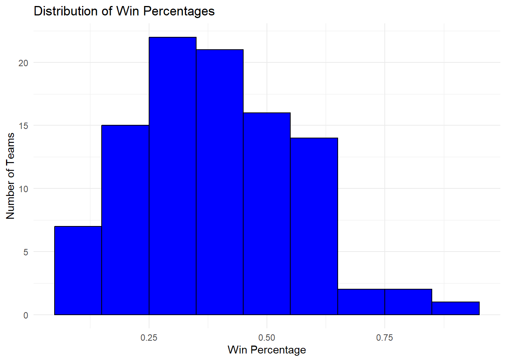
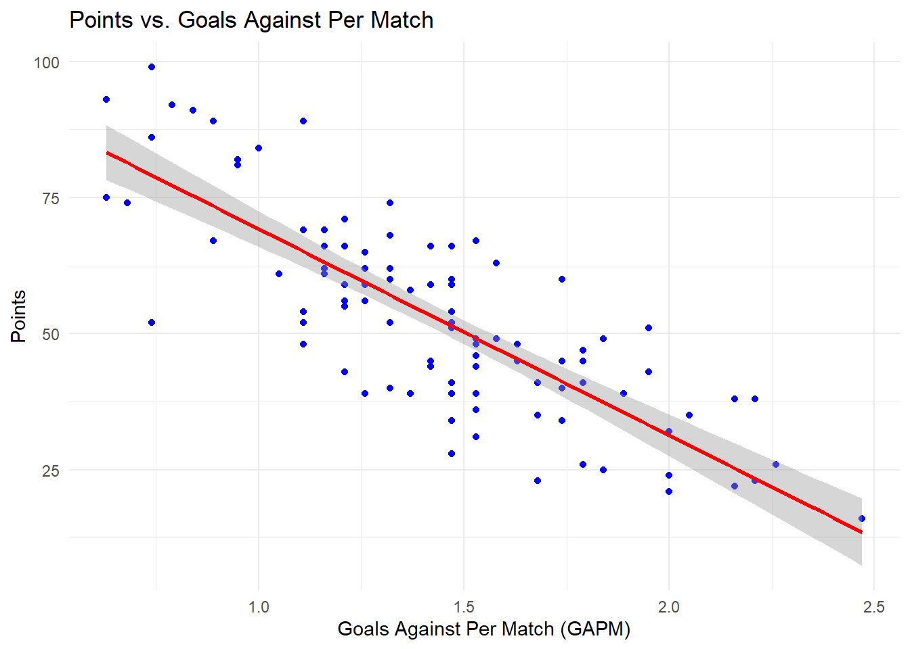
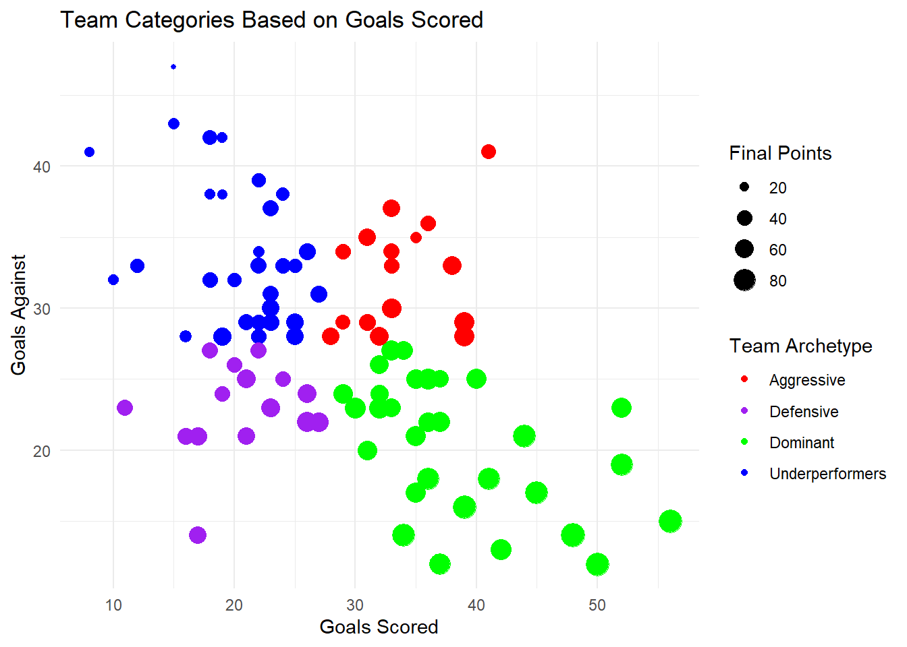

Primary Outcome Variable: Total points at the end of the season.
Why? It directly correlates to a team’s success in the league standings. The more points equals the higher you are out of the 20 teams.
Expectations: We expect that teams that accumulate more points in the first 15 matches along with higher expected goals for (xG) and a lower expected goals against (xGA) are more likely to finish higher in the standings. However, we need to see whether these early strong performances directly relate to a higher finish at the end of the season.
Explanatory Variables:
Real Goals Scored (G): The actual amount of goals the team has scored.
Goals Against (GA): The amount a team conceded per game.
Goals For (GF)
Goals Against Per Match (GAPM)
Goals Per Match (GPM)
Wins (W)
Draws (D)
Losses (L)
Goal Differential (Dif): The ratio of goals for and against. Usually a team with a very high goal differential finished higher up on the table. This will be a good variable to look at for the first 15 games of the season.
# These are each of the data sets we will use as training data. library(readr)PL19_20 <-read_csv("PL19-20.csv")
Rows: 20 Columns: 13
── Column specification ────────────────────────────────────────────────────────
Delimiter: ","
chr (1): Team
dbl (12): Pos, M, W, D, L, GF, GA, Dif, Points, GPM, GAPM, Final_Points
ℹ Use `spec()` to retrieve the full column specification for this data.
ℹ Specify the column types or set `show_col_types = FALSE` to quiet this message.
head(PL19_20)
# A tibble: 6 × 13
Pos Team M W D L GF GA Dif Points GPM GAPM
<dbl> <chr> <dbl> <dbl> <dbl> <dbl> <dbl> <dbl> <dbl> <dbl> <dbl> <dbl>
1 1 Liverpool … 19 18 1 0 48 14 34 55 2.53 0.74
2 2 Leicester … 19 12 3 4 41 18 23 39 2.16 0.95
3 3 Manchester… 19 12 2 5 52 23 29 38 2.74 1.21
4 4 Chelsea FC 19 10 2 7 33 27 6 32 1.74 1.42
5 5 Wolverhamp… 19 7 9 3 29 24 5 30 1.53 1.26
6 6 Tottenham … 19 8 5 6 34 27 7 29 1.79 1.42
# ℹ 1 more variable: Final_Points <dbl>
PL20_21 <-read_csv("PL20-21.csv")
Rows: 20 Columns: 13
── Column specification ────────────────────────────────────────────────────────
Delimiter: ","
chr (1): Team
dbl (12): #, M, W, D, L, GF, GA, Dif, Points, GPM, GAPM, Final_Points
ℹ Use `spec()` to retrieve the full column specification for this data.
ℹ Specify the column types or set `show_col_types = FALSE` to quiet this message.
Rows: 20 Columns: 13
── Column specification ────────────────────────────────────────────────────────
Delimiter: ","
chr (1): Team
dbl (12): #, M, W, D, L, GF, GA, Dif, Points, GPM, GAPM, Final_Points
ℹ Use `spec()` to retrieve the full column specification for this data.
ℹ Specify the column types or set `show_col_types = FALSE` to quiet this message.
head(PL21_22)
# A tibble: 6 × 13
`#` Team M W D L GF GA Dif Points GPM GAPM
<dbl> <chr> <dbl> <dbl> <dbl> <dbl> <dbl> <dbl> <dbl> <dbl> <dbl> <dbl>
1 1 Manchester… 19 15 2 2 50 12 38 47 2.63 0.63
2 2 Liverpool … 19 13 5 1 56 15 41 44 2.95 0.79
3 3 Chelsea FC 19 12 5 2 42 13 29 41 2.21 0.68
4 4 Arsenal FC 19 11 2 6 32 23 9 35 1.68 1.21
5 5 Tottenham … 19 11 2 6 26 22 4 35 1.37 1.16
6 6 Manchester… 19 10 4 5 32 26 6 34 1.68 1.37
# ℹ 1 more variable: Final_Points <dbl>
PL22_23 <-read_csv("PL22-23.csv")
Rows: 20 Columns: 13
── Column specification ────────────────────────────────────────────────────────
Delimiter: ","
chr (1): Team
dbl (12): #, M, W, D, L, GF, GA, Dif, Points, GPM, GAPM, Final_Points
ℹ Use `spec()` to retrieve the full column specification for this data.
ℹ Specify the column types or set `show_col_types = FALSE` to quiet this message.
Rows: 20 Columns: 13
── Column specification ────────────────────────────────────────────────────────
Delimiter: ","
chr (1): Team
dbl (12): #, M, W, D, L, GF, GA, Dif, Points, GPM, GAPM, Final_Points
ℹ Use `spec()` to retrieve the full column specification for this data.
ℹ Specify the column types or set `show_col_types = FALSE` to quiet this message.
head(PL23_24)
# A tibble: 6 × 13
`#` Team M W D L GF GA Dif Points GPM GAPM
<dbl> <chr> <dbl> <dbl> <dbl> <dbl> <dbl> <dbl> <dbl> <dbl> <dbl> <dbl>
1 1 Liverpool … 19 12 6 1 39 16 23 42 2.05 0.84
2 2 Manchester… 19 12 4 3 44 21 23 40 2.32 1.11
3 3 Arsenal FC 19 12 4 3 36 18 18 40 1.89 0.95
4 4 Aston Villa 19 12 3 4 40 25 15 39 2.11 1.32
5 5 Tottenham … 19 11 3 5 39 28 11 36 2.05 1.47
6 6 West Ham U… 19 10 3 6 33 30 3 33 1.74 1.58
# ℹ 1 more variable: Final_Points <dbl>
Data Wrangling and Transformation
Initial Problems:
We came across an initial problem of finding a multiple data sets that would allow us to move further with our research questions. More specifically:
We will be going back many years so data sets change from year to year and what they offer will also change. In more recent years there are more in-depth tables describing the league while in years like 2015 they aren’t as descriptive.
Solution: We are going to bring the years being used for the training data to more present seasons. Starting from the 2019-2020 season until the 2023-2024 will give us a good amount of data in order to accurately predict the final standings.
We originally said 15 games but it makes more sense to just do halfway through the season which is 19 games and this data seems to be more readily available.
Solution: We were able to find data tables online that give information halfway through the season for each year we are going to use.
Data Cleaning and Variable Creation
For these specific data sets there was no missing information but there were a few things we had to add and change. First off, to pull these data sets into RStudio we copied them into excel, saved them as a csv file, and then uploaded them to our qmd file.
Getting rid of the logo column. There was a column in the data set that just consisted of the logo for each team so we deleted that.
Changed Column names to something more readable. For example, Goal differentials was taken down in this format originally: 48:22, meaning a team scored 48 and let in 22 goals. We changed it to two different columns GF and GA that has the first number in GF and the second number in GA. Then in a column name Diff we have the differential of those two.
We added a few columns to make our data more specific. These include the GF, GA, GPM, and GAPM. The last two standing for Goals Per Match and Goals Against Per Match.
We also added a Final_Points column that has each teams point total after the season is done. This will be useful in comparing our predictions to the actual final outcomes.
Data Frame Creation
library(readr)library(dplyr)
Attaching package: 'dplyr'
The following objects are masked from 'package:stats':
filter, lag
The following objects are masked from 'package:base':
intersect, setdiff, setequal, union
# Here I am adding a season column to distinguish between each year. PL19_20$Season <-"2019-2020"PL20_21$Season <-"2020-2021"PL21_22$Season <-"2021-2022"PL22_23$Season <-"2022-2023"PL23_24$Season <-"2023-2024"# Next combining all of the data framesPL_data <-bind_rows(PL19_20, PL20_21, PL21_22, PL22_23, PL23_24)head(PL_data)
# A tibble: 6 × 15
Pos Team M W D L GF GA Dif Points GPM GAPM
<dbl> <chr> <dbl> <dbl> <dbl> <dbl> <dbl> <dbl> <dbl> <dbl> <dbl> <dbl>
1 1 Liverpool … 19 18 1 0 48 14 34 55 2.53 0.74
2 2 Leicester … 19 12 3 4 41 18 23 39 2.16 0.95
3 3 Manchester… 19 12 2 5 52 23 29 38 2.74 1.21
4 4 Chelsea FC 19 10 2 7 33 27 6 32 1.74 1.42
5 5 Wolverhamp… 19 7 9 3 29 24 5 30 1.53 1.26
6 6 Tottenham … 19 8 5 6 34 27 7 29 1.79 1.42
# ℹ 3 more variables: Final_Points <dbl>, Season <chr>, `#` <dbl>
Additional Variables for Analysis
There are a few more variables that we will create to see if any will have a stronger relationship with end of season points.
# The Proportion of matches wonPL_data <- PL_data %>%mutate(Win_Percentage = W / M)# The Proportion of matches lostPL_data <- PL_data %>%mutate(Loss_Percentage = L / M)# The Proportion of matches drawnPL_data <- PL_data %>%mutate(Draw_Percentage = D / M)# Goal Efficiency (Goals Per Win)PL_data <- PL_data %>%mutate(Goals_by_Win = GF / W)# Defensive Ability (Goals Conceded per Win)PL_data <- PL_data %>%mutate(GCBW = GA / W)# Attack-to-Defense Ratio (ADR)PL_data <- PL_data %>%mutate(ADR = GF / GA)
Also we will add a categorical column to categorize teams into either: Aggressive, Dominant, Under performers, and Defensive, based on their GF and GA.
PL_data <- PL_data %>%mutate(team_category =case_when( GF >=median(GF) & GA >=median(GA) ~"Aggressive", GF >=median(GF) & GA <median(GA) ~"Dominant", GF <median(GF) & GA >=median(GA) ~"Underperformers", GF <median(GF) & GA <median(GA) ~"Defensive" ))
Data Visualization
In the end we want to be able to predict the final standings of a given Premier League season based on the training data we chose. To further understand a teams potential half way through the season, we believe it is important to look at how different explanatory variables compare to our outcome variable.
Do certain explanatory variables help predict the final standings better than others?
Which variable has the strongest relationship to total points at the end of the season?
Final_Points Points W L
Min. :16.00 Min. : 5.00 Min. : 1.00 Min. : 0.00
1st Qu.:39.75 1st Qu.:19.00 1st Qu.: 5.00 1st Qu.: 5.00
Median :51.00 Median :25.00 Median : 7.00 Median : 7.50
Mean :52.56 Mean :26.17 Mean : 7.29 Mean : 7.29
3rd Qu.:63.50 3rd Qu.:33.00 3rd Qu.:10.00 3rd Qu.:10.00
Max. :99.00 Max. :55.00 Max. :18.00 Max. :16.00
D GF GA Dif
Min. : 1.00 Min. : 8.00 Min. :12.00 Min. :-33.00
1st Qu.: 3.00 1st Qu.:21.75 1st Qu.:23.00 1st Qu.: -9.00
Median : 4.00 Median :28.00 Median :28.00 Median : -3.50
Mean : 4.42 Mean :28.43 Mean :27.37 Mean : 0.00
3rd Qu.: 5.00 3rd Qu.:35.00 3rd Qu.:32.25 3rd Qu.: 9.25
Max. :10.00 Max. :56.00 Max. :47.00 Max. : 41.00
GPM GAPM GCBW Goals_by_Win
Min. :0.420 Min. :0.630 Min. : 0.7778 Min. : 2.100
1st Qu.:1.147 1st Qu.:1.210 1st Qu.: 2.4444 1st Qu.: 3.277
Median :1.470 Median :1.470 Median : 4.1339 Median : 3.888
Mean :1.497 Mean :1.441 Mean : 5.8892 Mean : 4.607
3rd Qu.:1.840 3rd Qu.:1.695 3rd Qu.: 6.6000 3rd Qu.: 5.000
Max. :2.950 Max. :2.470 Max. :42.0000 Max. :19.000
Win_Percentage Loss_Percentage ADR
Min. :0.05263 Min. :0.0000 Min. :0.1951
1st Qu.:0.26316 1st Qu.:0.2632 1st Qu.:0.7537
Median :0.36842 Median :0.3947 Median :1.0000
Mean :0.38368 Mean :0.3837 Mean :1.1915
3rd Qu.:0.52632 3rd Qu.:0.5263 3rd Qu.:1.3564
Max. :0.94737 Max. :0.8421 Max. :4.1667
Looking at the table, starting with points, there is a range from 5-55, indicating a wide disparity between the best and worst teams. Wins and Losses are both fairly balanced on average, but the spread shows that some teams have dominance while others struggle. The GPM columns shows that most teams score around 1-2 goals per game, but the GAPM varies quite a lot showing how important defense is in the Premier League. Furthermore, ADR seems to be a good variable as there is quite a good amount of spread, however has a few outliers representing the greatest and worst clubs throughout the 5 years.
In this heat map you are able to see how certain variables have a stronger correlation to total points than others. The stronger the correlation the closer to positive 1 the grid will show. For clarification, the Final_Points variable represents the club’s finishing points at the end of their respective season. The rest of the variables, including Points, represents the data from the club’s first half of the season.
For example, you can see Final_ Points to GA is -0.81. This is telling us that as Goals Against goes up a team total points for the end of the season is projected to decrease. (which makes sense in this case). On the other hand, Final_Points to Differential is 0.93 which is telling us that teams with a higher point differential will tend to have a higher amount of points.
Win Percentage Distribution
ggplot(PL_data, aes(x = Win_Percentage)) +geom_histogram(binwidth =0.1, fill ="blue", color ="black") +labs(title ="Distribution of Win Percentages",x ="Win Percentage",y ="Number of Teams") +theme_minimal()

This graph above displays the distribution of all the win percentages of each team halfway through their respective season. Interestingly the distribution is not normal as their appears to be a rightward skew. Also from the summary statistics table and this graph, the win percentage is around .4 which shows that most teams don’t have a .500 win %.
Final Points vs. Goals Against Per Match (GAPM)
ggplot(PL_data, aes(x = GAPM, y = Final_Points)) +geom_point(color ="blue") +geom_smooth(method ="lm", color ="red") +labs(title ="Points vs. Goals Against Per Match",x ="Goals Against Per Match (GAPM)",y ="Points") +theme_minimal()
`geom_smooth()` using formula = 'y ~ x'

We can see that there is a negative linear relationship between Goals Against Per Match and Points. This makes sense as the more goals you concede, the harder it is to generate league points.
Team Categories Distribution
# Teams based on their categoryggplot(PL_data, aes(x = GF, y = GA, color = team_category)) +geom_point(aes(size = Final_Points)) +scale_color_manual(values =c("Aggressive"="red", "Dominant"="green", "Underperformers"="blue", "Defensive"="purple")) +labs(title ="Team Categories Based on Goals Scored",x ="Goals Scored",y ="Goals Against",color ="Team Archetype",size ="Final Points") +theme_minimal()

This graph looks at each individual clubs’ Goals For and Against. However it uses the team category variable which we created earlier to categorize them and then show their end of season points through the sizing of their dot in the dot plot. Its clear the teams that don’t let in a lot of goals but score a lot early on in the season continue to do so later on. These teams we quantified as dominant for that reason. However for the defensive, aggressive, and under performer categories it is a little less clear how they finish the season as the sizing of the dots look relatively similar. So we will compare the average points per each team archetype to observe the difference.
Now looking at this table the defensive teams, on average, perform slightly better than the aggressive teams. To little surprise, the teams that under perform in the first half of the season tend to also under perform relative to the other archetypes.
Conclusion
Numerous insights can be drawn from our brief analysis. Firstly, the heat map displayed how a teams performance in the first half of the season is quite similar to that of the second half. This can be inferred as many different variables all had a high correlation with the end of season points. Next, the distribution of team performance is quite variable. Both shown through the summary statistics table and the win percentage distribution graph, the club’s performance data were quite spread out with few of them remaining close to the average. So, in this league there can be pure dominance and utter failure rather than most teams simply performing at the average. Finally defensive teams perform a little better than aggressive teams as conceding less goals seems to be more important that scoring goals.